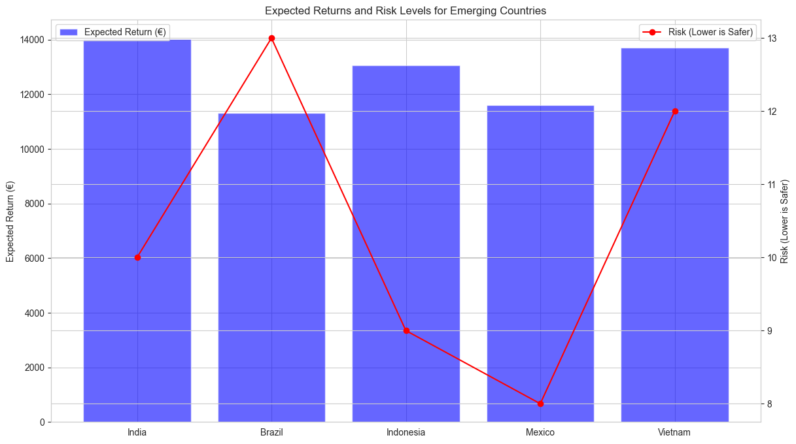

What I built — and how the work evolved.
This portfolio is intentionally visual and evidence-driven. The newest systems come first, followed by production and applied projects, then selected earlier work that shows the progression from analysis and small ML applications to larger software, AI and research systems.
Systems I am actively building now.
These projects best represent my current level: architecture, product thinking, engineering constraints, interfaces and real workflows rather than isolated notebooks.

Red Queen
A privacy-first Windows AI assistant combining local inference, persistent memory, controlled desktop tools, voice, vision and a security model where the controller — not the model — owns execution.

Autonomous Research Lab
A domain-agnostic scientific research platform coordinating specialized agents around testable questions, evidence, counter-evidence, analysis, provenance and final judgment.

NeuroAnatomy
An intelligent 3D neuroanatomy atlas for academic and educational environments, connecting structures to function, arterial supply, venous drainage and clinical context.
MedCore Systems
Healthcare technology startup co-founded with Cristina Danilov and Alexandru Neacsu. The company focuses on medical software and is currently developing an AI-assisted software solution for neurology.
Projects that prove end-to-end delivery.
This layer shows the transition from analysis into deployed applications, data engineering, research tooling, APIs, testing and production workflows.

Berlin RentWise
A Django/PostgreSQL application for exploring 447 Berlin neighborhoods across 12 boroughs, with REST APIs, interactive maps, data visualizations, AI-assisted interaction and automated deployment.

Job Market Intelligence
An automated European job-market intelligence pipeline with collection, normalization, ML role classification, historical tracking and an interactive dashboard.

Hospital Pressure Index — Ruhrgebiet
A reproducible healthcare analytics dashboard combining public aggregate hospital, demographic and socioeconomic indicators into inspectable pressure layers and scenarios.

Collapse Pathways
A structured, uncertainty-aware comparative research project translating historical collapse patterns into a dataset, exploratory analysis and scenario-based global fragility framework.
Face Recognition Webcam App
A local desktop face-enrollment and recognition workflow using OpenCV, InsightFace embeddings and ONNX Runtime, with privacy-conscious local storage.
Selected earlier work — kept because it shows the path.
These are not presented as my strongest projects today. They show the analytical and ML foundations that led to the systems above.

Berlin Borough Lifestyle
Correlations across amenities, demographics and crime data — an early step toward the later Berlin RentWise product.

Foreign Population & Crime in Berlin
Correlation and clustering work that helped build discipline around careful interpretation and non-causal claims.

Emerging Markets Investment Analysis
An early analytical project combining assumptions, calculations, visualizations and risk/return comparison.

App vs Web Usage Analysis
Exploratory behavioral analysis and forecasting across mobile, web and platform usage patterns.
A recruiter can see the difference between the early chart-driven work and the current systems: larger scope, stronger engineering, more testing, better interfaces, clearer architecture and more disciplined handling of evidence and constraints.
Small projects that established the basics.
Kept lightweight so they do not compete with current work, but still show that the progression was earned step by step.